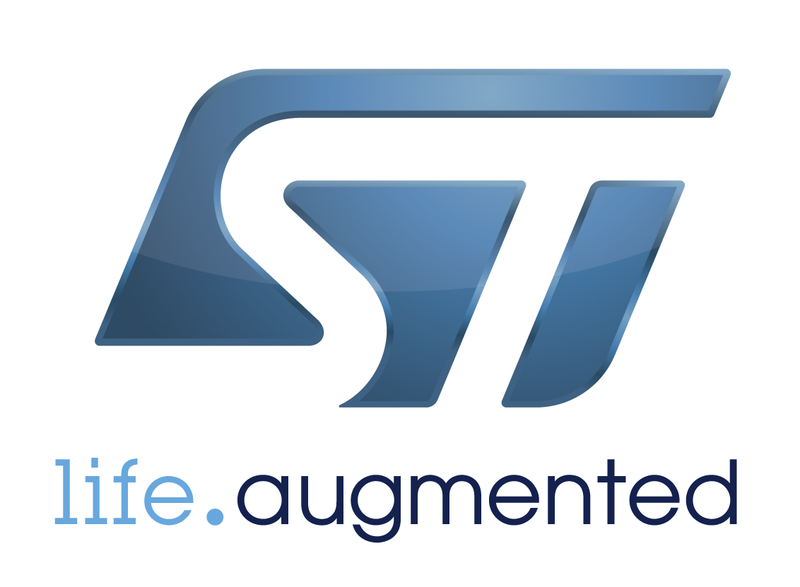
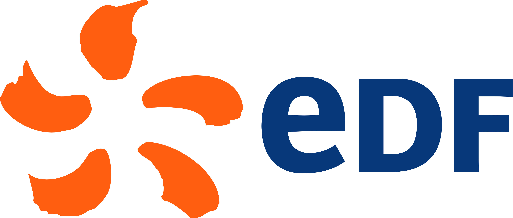
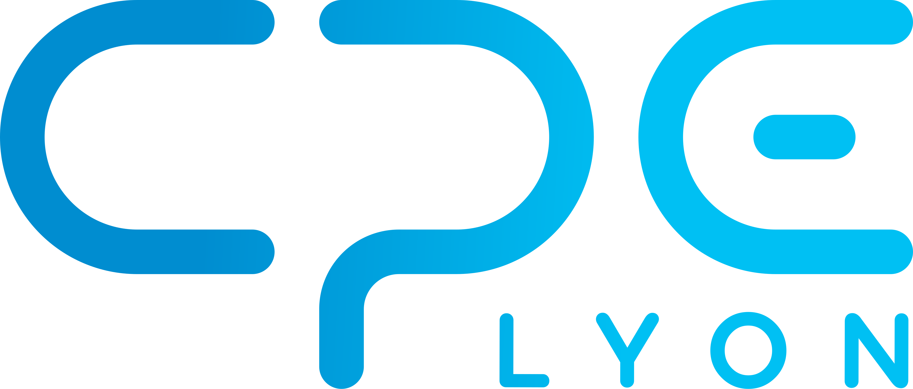
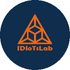

Développement Python
Applications, scripts d'automatisation et back-office sur mesure. Du besoin métier au logiciel fiable, testé et maintenable.
Disponible pour missions freelance
Ils m'ont fait confiance





Je conçois des applications, des outils métier et des solutions d'automatisation sur mesure, du back-office qui fait gagner des heures à l'app mobile et à l'embarqué piloté par logiciel. Polyvalent sur plusieurs langages (Python, JavaScript, C++, C#), je choisis la techno adaptée à chaque projet. Passé par STMicroelectronics, EDF et la robotique de compétition.
Une double compétence rare : je code le logiciel et je maîtrise le matériel qui l'exécute.
Applications, scripts d'automatisation et back-office sur mesure. Du besoin métier au logiciel fiable, testé et maintenable.
Applications cross-platform en React Native, déployées sur iOS et Android depuis une seule base de code. Front mobile, API back-end et base de données — un système complet, du prototype au store.
Interfaces internes, tableaux de bord et digitalisation de modes opératoires — comme pour EDF. Je transforme un process manuel en outil logiciel.
Collecte, nettoyage et exploitation de données. Scripts de traitement, automatisation de rapports et fiabilisation des chaînes de données.
Firmware et IHM sur ESP32 / M5Stack, protocoles de communication (OneWire). La compétence logicielle qui sait aussi parler au matériel.
Grands groupes industriels, robotique de compétition internationale et projets concrets.
CPE Lyon
Conception d'une interface d'intelligence artificielle combinant des écrans multilatéraux, une caméra 360° et deux Asus GX10 (NPU dédiés au calcul IA) pour du traitement et de la vision par ordinateur en local (edge AI). Conception et modélisation 3D du dispositif.
CPE Lyon — Étudiants ingénieurs 5ᵉ année
Accompagnement d'une classe d'élèvees ingénieurs en 5ᵉ année, sur le prototypage de leur projet de fin d'année en robotique : support au développement ROS, IA, web et Python, à l'impression 3D et à la mécatronique.
IDIoTsLab — FabLab à Bron (69)
Membre bénévole d'un FabLab : développement du site web de l'association, accompagnement de la communauté maker, prototypage et partage de savoir-faire en électronique et impression 3D.
Site webOnin-Technologie
Prestations full-stack, du logiciel au matériel : développement Python, applications, électronique et solutions sur mesure.
Elsys Design — pour STMicroelectronics
Développement d'une application web de gestion du parc informatique des bancs de test en laboratoire. Validation fonctionnelle de composants au sein d'un leader mondial du semi-conducteur.
LGM — pour EDF
Développement d'une application de création et de gestion des modes opératoires de maintenance. Développement Python et digitalisation des process pour un acteur majeur de l'énergie.
CPE Lyon — RoboCup 2024, ligue @Home
Robot d'assistance à domicile engagé en compétition internationale de robotique : développement de briques logicielles robotiques sous ROS, intégration, modélisation et fabrication 3D.
Partenariat ADLC pour TCL
Création d'IHM et d'un protocole de communication via OneWire sur M5Stack (base ESP32). Gestion de projet en groupe.
CPE Lyon — RoboCup 2023, ligue @Home
Travail sur un robot destiné à la recherche en aide à domicile : développement robotique et IA sous ROS (Robot Operating System), mécanique et électronique.
Activité entrepreneuriale
Réparation de smartphones et d'ordinateurs en indépendant : diagnostic, remplacement de composants et dépannage pour particuliers.
BTS Systèmes Numériques — Informatique & Réseaux
Lycée Édouard Branly, Lyon · Certification Cisco CCNAv7
BAC STI2D — option SIN
Lycée Carnot, Roanne · Systèmes d'Information & Numériques
Français — natif · Anglais — B2
À l'aise en environnement technique international
Disponible pour des missions freelance en développement logiciel Python, automatisation et outils métier. Écrivez-moi sur LinkedIn, je réponds vite.